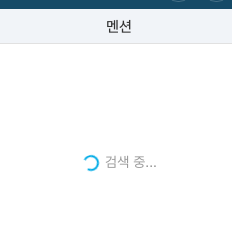
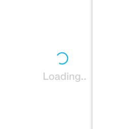
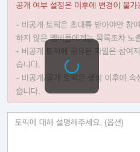

Checkboxes
Toggle
Selectboxes
Badges
새 메시지 숫자를 보여주는 알림 뱃지입니다.
Label
Shortcuts Label
가장 작은 크기의 라벨 스타일입니다. 주로 특정 메뉴의 단축키를 표시하는 보조 텍스트로 쓰이므로 Shortcuts 라벨로 지칭합니다. Dropdown 메뉴 안에서 사용하거나 14px 이하의 텍스트와 함께 사용합니다.
Connect Label
중간 크기의 라벨입니다. 15px 이상의 텍스트와 함께 사용할 경우에는 이 스타일을 사용합니다. 커넥트 메시지를 구분하는 라벨로 쓰이고 있습니다.
Introduction Label
가장 큰 사이즈의 라벨 스타일입니다. 단락을 구분할 필요가 있거나 시각적인 주목을 끌어야할 때 사용합니다.
Pills
Normal
기본 Pills 스타일입니다.
Small
작은 사이즈의 Pills 스타일입니다.
Notifications
Toast—Success
완료한 특정 액션에 대한 알림 메시지가 필요할 경우 토스트를 사용합니다.
Toast—Warning
사용자가 위험성이 있는 액션을 하고자 할 경우 Warning 토스트 메시지로 안내합니다.
Toast—Error
수행 불가능한 액션에 대한 안내 메시지가 필요할 경우 Error 토스트를 사용합니다.
Popover
Default
기본 팝오버 스타일입니다.
with image
이미지 요소가 있는 팝오버 스타일입니다.

with video
동영상이 있는 팝오버 스타일입니다.

Tooltips
Default
기본 툴팁 스타일입니다. 아이콘 버튼에 대한 기능을 텍스트로 안내하거나 상세 설명이 필요한 경우 사용합니다.
Color
튜토리얼 형식으로 사용하는 툴팁입니다.
Error
주로 텍스트 입력창과 함께 쓰이며 에러 메시지를 보여줄 때 사용합니다.
Dropdown
List type
리스트형 드롭다운 스타일입니다.
Default


Grid type
그리드형 드롭다운 스타일입니다.
- a
- b
- c
- d
- e
- f
- a
- b
- c
- d
- e
- f
- a
- b
- c
- d
- e
- f
- e
- f
- 1
- 1
- 1
Forms
Text Input
텍스트 입력창 스타일입니다.
Small
Default
Read only
With icon
With fixed text
Error
Textareas
멀티라인 텍스트 입력창 스타일입니다.
Password Strength Checker
비밀번호 강도 안내 영역 스타일입니다.
Modal
Small
작은 크기의 모달 스타일입니다.

Default
기본 모달 스타일입니다.
Large
큰 사이즈의 모달 스타일입니다.
Full-screen
전체 화면 크기의 모달 스타일입니다.
Search
Large
큰 크기의 검색창 스타일입니다.
Default
기본 검색창 스타일입니다.
Small
작은 크기의 검색창 스타일입니다.
Spinners
Large
큰 크기의 스피너 스타일입니다.

Default
기본 스피너 스타일입니다.
with message
메시지 텍스트와 함께 쓰이는 스피너입니다.


with box
스피너를 감싸는 박스가 필요할 때는 아래와 같이 사용합니다.

